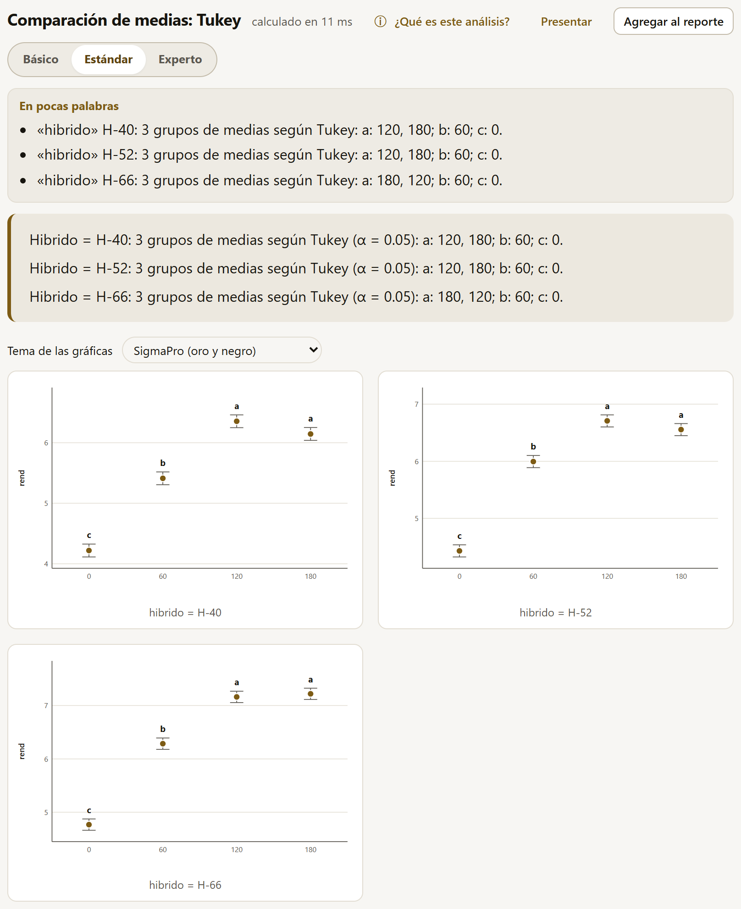

4.10Diseños experimentales
El análisis de varianza de un diseño experimental separa la variación de la respuesta en la que se debe a los tratamientos, la que se debe a la forma en que se acomodó el ensayo (bloques, filas, columnas, parcelas grandes) y la que queda sin explicar (el error). Cada diseño tiene su modelo y, en algunos, más de un error. SigmaPro trae los ocho diseños más usados en la investigación agrícola y, para lo que no encaja en ellos, el modelo lineal general.
| Diseño | Modelo | Cuándo |
|---|---|---|
| Completamente al azar | y ~ A * B * C | Unidades homogéneas (macetas en cámara, cajas de germinación); hasta tres factores cruzados. |
| Bloques completos al azar | y ~ bloque + A * B * C | El más común en campo: cada bloque tiene todos los tratamientos y agrupa parcelas parecidas. |
| Cuadro latino | y ~ fila + columna + A * B | Variación en dos direcciones (pendiente y fertilidad); cada tratamiento una vez en cada fila y en cada columna. |
| Parcelas divididas | Error(bloque/A) | Un factor que solo se puede aplicar a parcelas grandes (riego, labranza, fecha de siembra) y otro dentro de ellas. |
| Parcelas subdivididas | Error(bloque/A/B) | Tres factores, cada uno en parcelas más chicas que el anterior. |
| Parcelas en franjas | Error(bloque/(A + B)) | Dos factores aplicados en franjas que se cruzan (labranza en un sentido, riego en el otro). |
| Bloques incompletos balanceados | y ~ bloque + trat | Más tratamientos que parcelas por bloque, con cada par de tratamientos juntos el mismo número de veces. |
| Látice y alfa-látice | y ~ rep + rep:bloque + trat | Muchos genotipos (mejoramiento): bloques incompletos dentro de repeticiones completas. |
| Modelo lineal general | La fórmula que se escriba | Lo que no encaja en los anteriores: anidados, covariables con interacciones, factores extra. |
El formulario
Todos piden la Variable de respuesta y los papeles del diseño. Cada campo se llama como en pantalla:
| Diseño | Papeles |
|---|---|
| Completamente al azar, bloques | Factores de tratamiento (hasta 3, cruzados); en bloques, además, Bloques. |
| Cuadro latino | Factores de tratamiento (hasta 2), Filas y Columnas. |
| Parcelas divididas | Las parcelas grandes están en (bloques completos al azar, un diseño completamente al azar o un cuadro latino), Factor de la parcela grande, Factor de la subparcela y, según dónde estén las parcelas grandes, Bloques, la Repetición de la parcela grande (el número de cada parcela grande dentro de su tratamiento) o Filas y Columnas. |
| Parcelas subdivididas | Factor de la parcela grande, Factor de la subparcela, Factor de la sub-subparcela y Bloques. |
| Parcelas en franjas | Factor en franjas horizontales, Factor en franjas verticales y Bloques. |
| Bloques incompletos balanceados | Tratamientos (un factor) y Bloques. |
| Látice y alfa-látice | Tratamientos (un factor), Repeticiones y Bloques incompletos (dentro de cada repetición). |
Una columna numérica con pocos valores (una dosis) aparece marcada «(numérica)» y se usa como factor. El completamente al azar, los bloques y el cuadro latino ofrecen además las Sumas de cuadrados (Tipo III (medias marginales), Tipo II (marginalidad) o Tipo I (secuenciales)); los bloques incompletos usan siempre las secuenciales (más abajo), y todos piden el Nivel de significancia. Cuando una columna identifica las parcelas, el asistente (sección 4.2) reconoce en los datos las parcelas divididas, subdivididas y en franjas y las propone.
Con datos balanceados (el mismo número de observaciones en cada combinación), los tres tipos dan lo mismo y la nota del cuadro lo dice. Con datos desbalanceados (parcelas perdidas, tratamientos con distinto número de repeticiones), cada tipo prueba una hipótesis distinta:
- Tipo I (secuencial): cada término ajustado por los que van antes; el orden importa.
- Tipo II (marginalidad): cada término ajustado por los demás que no lo contienen; es la más potente si no hay interacción.
- Tipo III (medias marginales, la opción por omisión): cada término ajustado por todos los demás, con contrastes de suma cero; prueba las medias marginales con pesos iguales, que es lo que casi siempre se quiere en un experimento.
Lo que trae el resultado
- La conclusión por efecto («hibrido: hay diferencias (F = 60.635, p < 0.001)») y los indicadores del ensayo: media general, coeficiente de variación (uno por error en los diseños con estratos: CV(a), CV(b)…) y, con un solo error, R².
- La gráfica: con un factor, cajas con los puntos de cada tratamiento y su media; con dos o más, la gráfica de interacción de los dos primeros, una línea por nivel del segundo (figura 4.7). Arriba de ella está el selector Tema de las gráficas (sección 4.5).
- El botón Comparar las medias de este diseño, que abre la comparación de medias (sección 4.11) con el mismo diseño y las mismas variables.
- Los cuadros: el análisis de varianza; el resumen del ensayo (media general, observaciones, CV, R² y la eficiencia relativa, si aplica); las medias de cada factor y de las combinaciones de los dos primeros; y, con dos o más factores en un diseño de un solo error, los efectos simples: la prueba F de cada factor dentro de cada nivel del otro. Con un solo error las medias son las marginales estimadas, con su error estándar (una media que no se puede estimar sale como «—»); en los diseños con estratos son los promedios de cada nivel, con su número de datos.
- Al pie de los ocho diseños (no del modelo lineal general), la franja Continúa en la suite LABG sugiere AgriDesign, que genera la aleatorización, el croquis y la hoja de campo del diseño antes de sembrar; con datos cargados, su botón Enviar datos a AgriDesign descarga la tabla y abre la app (capítulo 10).
Con dos o más factores, si la interacción es significativa la conclusión lo advierte. En los diseños de un solo error remite a los efectos simples y a las medias de las combinaciones; en los diseños con estratos, que no tienen el cuadro de efectos simples, dice que se compare un factor dentro de cada nivel del otro en Comparaciones de medias, con Dentro de cada nivel de (sección 4.11).
La eficiencia relativa
El resumen del ensayo dice cuánto ganó el ensayo por bloquear (Gomez y Gomez, 1984), en por ciento y con el factor de ajuste por grados de libertad cuando el error tiene menos de 20:
- En bloques completos al azar, frente a completamente al azar. En el maíz es de 160 %: un diseño completamente al azar habría necesitado 60 % más repeticiones para la misma precisión. No se calcula con parcelas perdidas ni con bloques generalizados.
- En el cuadro latino, tres: frente a completamente al azar, frente a bloques con las filas como bloques y frente a bloques con las columnas como bloques. Con las filas como bloques, la variación entre columnas pasaría al error: por eso esa eficiencia depende del cuadrado medio de las columnas (y la otra, del de las filas). En el trigo, con las hileras como filas: 128.4 % frente a completamente al azar, 111.1 % con las hileras como bloques y 123.7 % con las columnas como bloques; bloquear solo por columnas habría perdido más. Se calcula con el cuadro completo (t² parcelas).
Algunas situaciones se reconocen solas y se explican en un aviso: más de una parcela por tratamiento en cada bloque (bloques generalizados: se estima la interacción bloque × tratamiento), combinaciones de bloque y tratamiento perdidas (las medias se ajustan), celdas vacías (la suma de cuadrados tipo III no existe y se usa la II) o un término confundido con otro.
Parcelas divididas, subdivididas y en franjas
En estos diseños cada factor se aplicó a unidades de distinto tamaño, así que cada uno tiene su propio error: el factor de la parcela grande se prueba contra el error a y el de la subparcela y la interacción contra el error b (la variación dentro de las parcelas grandes). El error a es bloque × parcela grande con las parcelas grandes en bloques, parcela grande × repetición si están al azar y fila × columna si están en cuadro latino. La nota del cuadro dice contra qué error se prueba cada término, y los bloques no se prueban porque su estrato no tiene error propio. Analizar estos ensayos como un factorial común usaría un solo error y daría pruebas F falsas, casi siempre a favor del factor de la parcela grande.

Las subdivididas agregan un tercer estrato (Error(bloque/A/B), con errores a, b y c) y las franjas tienen tres errores: el a para el factor de las franjas horizontales (bloque × A), el b para el de las verticales (bloque × B) y el c para su interacción. Con el maíz acomodado en franjas, por ejemplo, los errores a, b y c tienen 6, 9 y 18 grados de libertad. En las subdivididas, el cuadro de medias de las combinaciones y la gráfica de interacción muestran solo los dos primeros factores (A × B); las demás interacciones se estudian en Comparaciones de medias.
El ejemplo Arroz: riego × variedad × nitrógeno (parcelas subdivididas), ficticio y para practicar, lo muestra (figura de abajo): el riego, en las parcelas grandes, se prueba con solo 2 grados de libertad del error a (F = 95.839, p = 0.010); la interacción riego × nitrógeno es significativa (F = 23.273, p < 0.001), y la conclusión pide comparar un factor dentro de cada nivel del otro; la gráfica y el cuadro de las combinaciones, en cambio, muestran riego × variedad. Los coeficientes de variación bajan del error a al c: 8.5, 3.1 y 2.2 %. Para las parcelas divididas hay otro ejemplo de práctica, Trigo: riego × variedad (parcelas divididas).
![Las parcelas subdivididas del arroz: la conclusión con riego (F = 95.839, p = 0.010), variedad (F = 36.254, p menor que 0.001), riego × variedad sin evidencia (p = 0.060), nitrógeno (F = 459.841), riego × nitrógeno con diferencias (F = 23.273, p menor que 0.001) y las otras dos interacciones sin evidencia; el aviso de que la interacción riego × nitrógeno es significativa y conviene comparar un factor dentro de cada nivel del otro con Dentro de cada nivel de; media general 5.938 y CV(a) 8.5 %, CV(b) 3.1 %, CV(c) 2.2 %; el botón para comparar las medias (la gráfica de la interacción riego × variedad, que va entre la conclusión y el cuadro, no se muestra); y el análisis de varianza con bloque, riego, error a (2 gl), variedad, riego × variedad, error b (8 gl), nitrógeno, sus interacciones, error c (12 gl) y total](../img/b4-subdivididas.png)
Con datos desbalanceados (parcelas perdidas o sobrantes), las pruebas F de los estratos dejan de ser exactas y la app lo advierte; en ese caso conviene el modelo mixto de la sección 4.15, que maneja el desbalance. Si un término del error queda confundido con otro, un aviso dice que el modelo de error es singular.
Bloques incompletos: BIB, látice y alfa-látice
Cuando hay más tratamientos que parcelas caben en un bloque homogéneo, cada bloque recibe solo algunos. El análisis intrabloque compara los tratamientos dentro de los bloques: su suma de cuadrados es secuencial (tipo I), con los tratamientos al final, ajustados por los bloques, y sus medias son medias ajustadas. La nota del cuadro lo recuerda. La F de los bloques, en cambio, no está ajustada por los tratamientos y solo es un indicio.
En los bloques incompletos balanceados, el resumen del ensayo trae además el factor de eficiencia E = λt/(rk) y λ, las veces que coincide cada par de tratamientos en un bloque. Con el ejemplo Sorgo: siete líneas en bloques incompletos (BIB), ficticio y para practicar (7 líneas en 7 bloques de 3), las líneas difieren (F = 8.604, p = 0.004), con E = 0.778 y λ = 1. Si el diseño no es un BIB exacto (bloques de distinto tamaño o pares que no coinciden el mismo número de veces), la app lo dice y no calcula la eficiencia; el análisis intrabloque sigue siendo válido.

En estos dos diseños, la gráfica de cajas muestra los datos crudos de cada tratamiento, sin ajustar por los bloques; las medias que corresponde publicar son las ajustadas del cuadro, con su error estándar. El análisis intrabloque desperdicia la información que hay entre los bloques. Para recuperarla, con los bloques como efecto aleatorio, está Látice y alfa-látice (recuperación entre bloques), en los modelos mixtos (sección 4.15); para la heredabilidad de los genotipos, la sección 4.16.
El modelo lineal general
Para los modelos que no son un diseño del catálogo, Modelo lineal general (fórmula) pide la Variable de respuesta y los Términos del modelo (lo que va después de «~»), con la notación de la sección 4.4; debajo, la app explica cómo leyó cada término. Pide también las Numéricas que son tratamientos (factor), las Sumas de cuadrados, el Nivel de confianza y el Nivel de significancia. No admite estratos de error (Error(…): para eso están los diseños de parcelas) ni funciones dentro de la fórmula (la transformación se hace en el bloque Datos); sin intercepto, usa las sumas de cuadrados tipo I.
Entrega el análisis de varianza, los coeficientes (con contrastes de tratamiento: cada nivel comparado con el primero), una gráfica de las medias marginales (de la primera interacción entre dos factores o, si no hay, del factor con la mayor F; sin factores, los observados contra los ajustados) y las medias de cada factor con su intervalo de confianza. No trae el resumen del ensayo, la eficiencia ni la franja de la suite. Es también lo que usa el constructor cuando la fórmula se escribe a mano.
4.11Comparaciones de medias y contrastes
Un análisis de varianza dice si los tratamientos difieren, no cuáles. Para eso están los cuatro métodos de esta familia, que trabajan sobre el modelo de cualquiera de los ocho diseños de la sección anterior: el formulario empieza por el Diseño del experimento y sus papeles, y luego pide qué comparar.
| Método | Para qué |
|---|---|
| Comparaciones de medias | Todos los tratamientos entre sí (o contra un testigo), con las letras de grupos. |
| Contrastes | Comparaciones planeadas de antemano (el testigo contra el resto, un grupo contra otro). |
| Polinomios ortogonales | La forma de la respuesta a un factor cuantitativo (una dosis): lineal, cuadrática, cúbica, y la dosis óptima. |
| Medias ajustadas | Las medias marginales estimadas con su intervalo de confianza, sin comparar. |
Dos campos son comunes. El primero es qué se compara: en las comparaciones y las medias ajustadas, Medias de, con una casilla por factor (uno o dos a la vez; con dos se comparan sus combinaciones, como «H-66 : 180»); en los contrastes, Factor, y en los polinomios, Factor cuantitativo (dosis). El segundo es Dentro de cada nivel de, que de entrada dice — todos juntos — y admite un solo factor. Si la interacción es significativa, comparar las medias de un factor promediando sobre el otro puede engañar; entonces se compara un factor dentro de cada nivel del otro (las dosis dentro de cada híbrido), y el resultado trae una conclusión, sus cuadros y una gráfica por nivel (hasta seis gráficas).

Comparaciones de medias

La Prueba elige cómo se controla el error de hacer muchas comparaciones a la vez:
| Prueba | Cómo es |
|---|---|
| Tukey | Todos los pares, con el error de toda la familia de comparaciones controlado (Tukey-Kramer si las repeticiones difieren). La opción por omisión y la más recomendada para comparar todo contra todo. |
| DMS de Fisher y DMS protegida | La diferencia mínima significativa, sin ajuste por multiplicidad (encuentra más diferencias, también falsas). La protegida solo separa medias si la F de ese término fue significativa; si no, todas las medias quedan con la misma letra y una nota lo dice. Esa F sale del análisis con sumas de cuadrados secuenciales (tipo I), que en un factorial desbalanceado puede no ser la tipo III que muestra el diseño. |
| Duncan y Student-Newman-Keuls | Pruebas por pasos, tradicionales en agronomía; controlan peor el error que Tukey. Usan un error estándar común (con la media armónica de las repeticiones) y el estadístico q. |
| Scheffé | Prueba los pares con el criterio de Scheffé (F con k − 1 gl), que protege cualquier contraste; por eso es muy conservadora. |
| Bonferroni, Šidák y Holm | Ajustes generales del valor p de la DMS; Holm es el más potente de los tres. |
| Dunnett (contra un testigo) | Cada tratamiento contra un testigo, que se elige en Testigo; la Hipótesis puede ser Distinto del testigo, Mayor que el testigo o Menor que el testigo. Más potente que Tukey para esa pregunta. |
| Games-Howell (varianzas distintas) | Todos los pares sin suponer varianzas iguales: cada par con su propio error y sus grados de libertad. Solo con un factor en un diseño completamente al azar. |
El resultado trae la conclusión con los grupos («c: H-40; b: H-52; a: H-66»), la gráfica de las medias con su error estándar y sus letras, el cuadro de medias ordenadas de mayor a menor con su grupo y el de las comparaciones por pares (diferencia, EE, gl, el estadístico t —o q en Duncan, SNK y Games-Howell—, p ajustado y si difieren). Las medias son las marginales estimadas del modelo del diseño y el error es el de ese diseño: en unas parcelas divididas, cada comparación usa el error que le corresponde y los grados de libertad de Satterthwaite, y la nota del cuadro lo dice. En los diseños con estratos, el cuadro de medias no trae su error estándar y la gráfica va sin barras.
Con el arroz de la sección anterior, por ejemplo, Medias de nitrógeno Dentro de cada nivel de riego muestra la interacción: la dosis N80 supera a N0 por 0.731 en temporal y por 1.156 con riego (ambas con p < 0.001, con los 12 gl del error c).
Dunnett
Los p de Dunnett son exactos y de un solo paso: salen de la distribución t multivariada de las comparaciones contra el testigo y se calculan en unos segundos, también en los bloques incompletos balanceados. Con los trips del aguacate (bloques completos con dos parcelas perdidas), la hipótesis Menor que el testigo encuentra que solo el Spinosad reduce los trips frente al Testigo (−6.333 trips por brote, p = 0.016).
- Dunnett necesita un solo error. En parcelas divididas, subdivididas o en franjas, la app se detiene y explica que Bonferroni y Holm, que ajustan todos los pares, sirven en su lugar aunque contra el testigo resultan conservadoras. También se detiene cuando las comparaciones contra el testigo no tienen la correlación que exige el cálculo exacto, como en el alfa-látice de 24 genotipos o con ciertas parcelas perdidas: el mensaje propone lo mismo.
- Duncan y Student-Newman-Keuls también necesitan un solo error; en parcelas divididas, la app propone Tukey, DMS o Bonferroni.
- Games-Howell es solo para un factor en un diseño completamente al azar, sin Dentro de cada nivel de; en otros diseños, la app propone Tukey o Bonferroni.
- Medias ajustadas necesita un solo error; en parcelas divididas, subdivididas o en franjas, las medias se comparan con Comparaciones de medias.
Contrastes
Un contraste compara grupos de tratamientos con coeficientes que suman cero. Se escriben en el campo Contrastes (uno por renglón), con la forma nombre: coeficientes en el orden de los niveles que la ayuda muestra debajo (los coeficientes se separan con espacios, comas o punto y coma; un renglón sin nombre se llama «Contraste 1», «Contraste 2»…). Con el campo vacío, la app muestra de ejemplo el primer nivel contra el resto:
I y II vs III: 1 1 -2 I vs II: 1 -1 0

Cada contraste trae su estimación, EE, gl, t, p y, en los diseños de un solo error, su suma de cuadrados. Si los contrastes son ortogonales entre sí (con el mismo número de repeticiones por nivel, sus coeficientes multiplicados término a término suman cero; la app lo revisa con las repeticiones reales de cada nivel), sus sumas de cuadrados se reparten sin traslaparse la de los tratamientos, y la nota lo dice; si no, avisa que se traslapan. Un renglón que no suma cero también se calcula, con la nota de que es una combinación lineal y no un contraste. Los contrastes se planean antes de ver los datos; elegidos después, tienen el problema de las comparaciones múltiples.
Polinomios ortogonales
Con un factor cuantitativo (dosis de nitrógeno, densidades, temperaturas), lo interesante no son las diferencias entre dosis sino la forma de la respuesta. Los polinomios ortogonales descomponen la variación entre dosis en un componente lineal, uno cuadrático, uno cúbico… (tantos como dosis menos una), cada uno con su prueba. Se elige el Factor cuantitativo (dosis), cuyos niveles deben ser números (al menos tres), y el Grado de la curva (Recta, Cuadrática (con la dosis óptima) o Cúbica), que decide la curva ajustada; el cuadro trae siempre todos los componentes.

Los coeficientes ortogonales se calculan sobre los niveles reales de la dosis, también si no están igualmente espaciados. Con la curva cuadrática, la app ajusta la ecuación a las medias (y = 4.454 + 0.03133·x − 1.060·10−4·x² en el maíz, con R² = 0.998) y da la dosis del máximo o del mínimo; si cae fuera de las dosis probadas, lo advierte, porque no conviene extrapolar. Con Dentro de cada nivel de sale una curva por nivel: en el maíz, el máximo de cada híbrido está en 147.5 (H-40), 139.5 (H-52) y 157.7 kg/ha (H-66). Para una respuesta que se estabiliza en una meseta, conviene el modelo lineal-meseta (sección 4.18).
Medias ajustadas
Las medias marginales estimadas son los promedios que predice el modelo para cada nivel, con pesos iguales sobre los demás factores. Con datos balanceados son las medias de siempre; con parcelas perdidas, bloques incompletos o covariables, son las que corresponde publicar. El método da, para el factor elegido (y dentro de cada nivel de otro, si se pide), la media, su EE, los grados de libertad y su intervalo de confianza con el Nivel de confianza elegido, con una gráfica de las medias y sus intervalos. En el alfa-látice, por ejemplo, las 24 medias ajustadas tienen errores estándar de 0.194 a 0.195, con 31 gl.